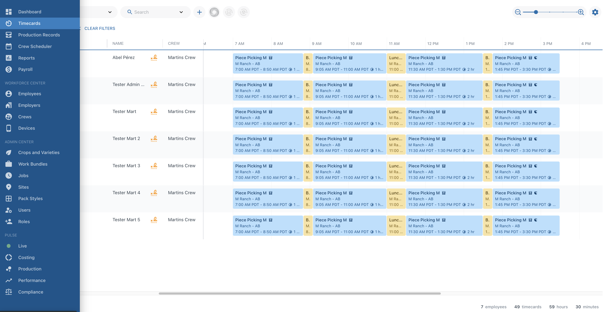
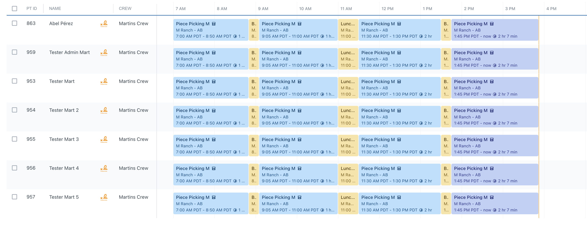
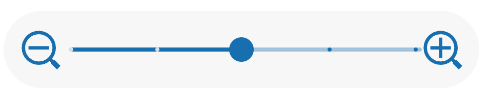
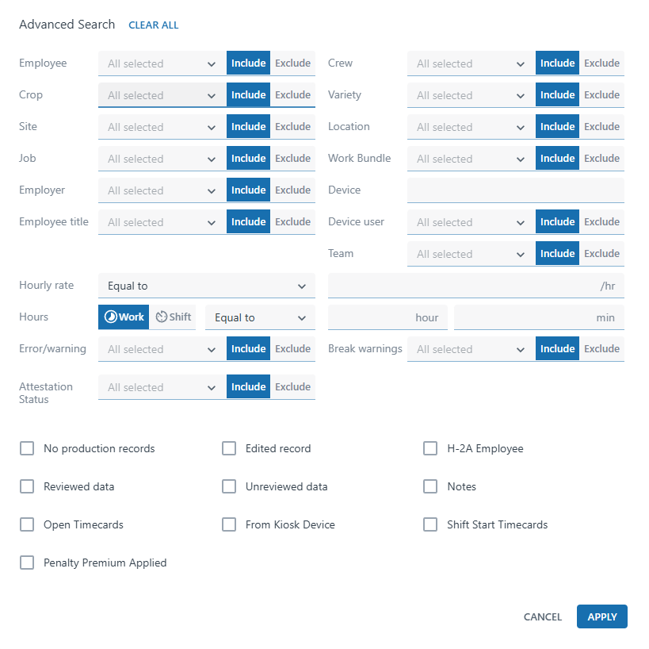
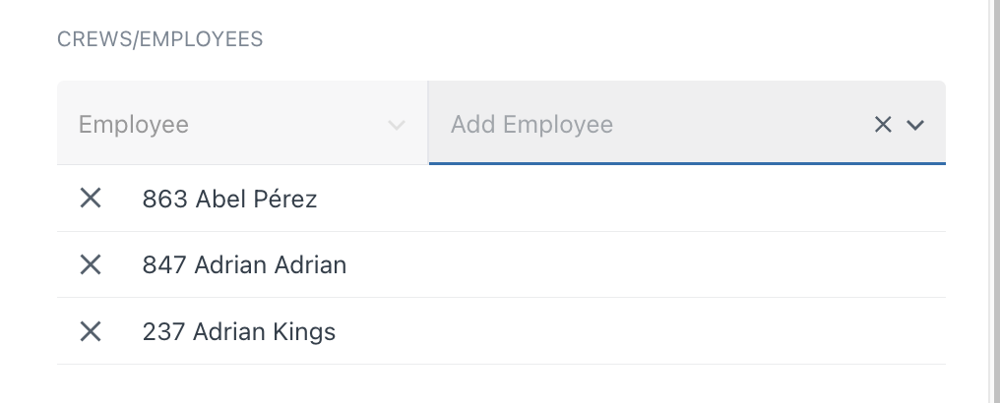
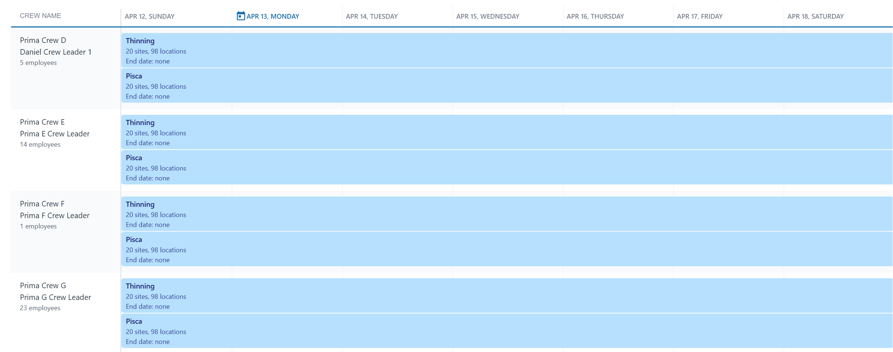
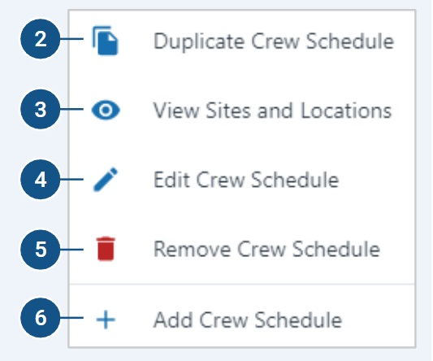
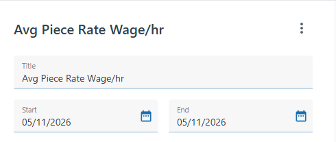

Greyed-out modules are currently in development and will be available soon.
Timecards
View, create, edit, audit, and manage every time record generated by your field devices. This is where daily auditing and payroll prep happens.

Timecards capture every activity an employee performs — start time, end time, duration, Job, Site, Location, pay style, rate, Production Records, Crew, and Employer. Each time a worker is checked into an activity on a device, a Timecard is created automatically.
Navigate to Timecards from the left sidebar.
Timeline View
Color-coded blocks per employee. Blue = Work Yellow = Break / Lunch Purple = In Progress (Live)

List View
Tabular view with sortable columns. Best for bulk editing and CSV export.

Summary View
Aggregated totals per employee.

Date Navigation
Arrows step one day. Dropdown selects specific dates or presets.
Toolbar Actions
+ Add timecards / bulk breaks · Bulk checkout · Copy timecards · Select all
Zoom Slider
Timeline only — top-right corner. Zoom in for detail, out for full day.

Settings (Gear Icon)
Column visibility, records per page, records status, overnights toggle.
Overnight Shift Functionality
Some organizations treat employee overnight work as a collective shift rather than separate timecards assigned to two different days. When an employee's timecards span past midnight, PickTrace aggregates them as one continuous shift.
How It Works
- Continuous timecards that pass midnight are considered on a collective basis — hours and pieces are combined.
- Records are assigned to the calendar day on which work began (the shift start date).
- The main impact is on overtime eligibility: aggregate hours across the full shift determine whether OT thresholds are met.
How Overnight Data Appears
| Area | Behavior |
|---|---|
| Timecards & Production Records | A "Shift Start" column shows the first checkpoint in a shift for each record. An overnight icon is displayed if the record falls on the 2nd day of an overnight shift. Columns can be hidden through "Column Visibility" in the gear icon settings. |
| Timeline | An arrow and icon indicate when a timecard before or after midnight is part of an overnight shift, with clickable dates to navigate to the previous or next day. These can be hidden via the "Overnights" toggle in settings. |
| Dashboard & Reports | When filtered for dates including overnight shifts, results appear with the date of the respective days worked. However, filtering for only Day 1 of an overnight shift includes Day 2's work as well. |
| Payroll | Data is aggregated by shift date and shown only for the shift's start date. Hours worked on Day 2 of an overnight shift appear in line items for Day 1. |
Bottom Status Bar
Shows employees, timecards, total hours, and minutes for the current view.
Right-Click Context Menu
Right-click a time block to open the context menu. The available options depend on how many timecards you have selected.
One Selected

Multiple Selected

Advanced Search & Filter
Click the Search ▾ dropdown in the top header to open Advanced Search.


Narrow by who worked and where.
Filter by what the employee was doing, how long, and on what device.
Surface errors, break violations, and penalty premium status.
Checkbox filters that show or hide specific record types.
How to Create a Timecard
 Adding by crew is faster when everyone is missing — type the crew name and all members are added in one step.
Adding by crew is faster when everyone is missing — type the crew name and all members are added in one step.Duplicate a Timecard
Copies all attributes from an existing timecard and assigns it to a different employee. Right-click → Duplicate Timecard. Change the employee name and any other details → Save.

You can assign the duplicate to multiple employees at once — add several names before saving.Editing One Timecard
Select one timecard → right-click → Edit Timecard, or click the Edit button in the toolbar at the top of the screen. The flyout shows all timecards for that employee on the selected day. Edit any attribute: start time, end time, crew, site, location, work bundle, job, pay style, rate.
Editing Multiple Timecards
Select multiple timecards (Shift+Click or Ctrl+Click) → right-click → Edit Timecards. Use checkboxes to apply bulk changes: Start Time, Checkout Time, Site & Location, Job, Pay Style & Rate, Duration.
Pay Rate Rule
Switching Crew
Select one or multiple timecards → right-click → Switch Crew → choose the correct crew → Save. Alternatively, right-click → Edit Timecard → change the Crew field in the edit window → Save.
Adding Breaks in Bulk
Fixing Double Break / Double Lunch
Daily Audit Steps
PickTrace flags errors with a red icon next to the employee name. Click any error below to expand.
Symptoms
- 12:00 AM start time on the next day's card
- ~24 hours shown
- Timeline runs the entire day through 11:59 PM
- Bulk checkout changes skip this employee
Fix
Single Timecard
Bulk Edit
Single Timecard
Bulk Edit
Find a coworker who did the same work → right-click their timecard → Duplicate → assign to the missing employee → adjust details → Save.
Archive
Removes a timecard from reporting but does not delete it — it can be restored at any time.
Unarchive
Review & Approve
Reviewing marks timecards as audited and approved. Select the timecards you want to review, then either right-click → Review Timecards or use the top toolbar icons to Review / Un-review.
Production Records
View and correct piece-pay records — bins, trays, trees, and any other unit your crews produce in the field.

Production Records are created on the handheld device when a crew leader or device user credits an employee with a unit of production (e.g., one bin, one tray, one tree). Each record is linked to an employee, a site, a location, a crop, a job, a unit count, and a piece rate.
Key Columns
| Column | What it shows |
|---|---|
| PT ID | Employee's PickTrace ID |
| Unit Count | Number of units credited |
| Unit | Type of unit (bins, trees, trays, etc.) |
| Piece Rate | Dollar amount per unit |
| Site / Location | Ranch and block where the work happened |
| Crop | Crop variety associated with the work |
Hiding & Showing Columns
Click the gear icon (top-right) → select Column Visibility. Toggle columns on or off to show only the data you need. Changes apply immediately.
Rearranging Columns
Drag any column header left or right to reposition it. The new order is saved automatically.
Adding a Single Production Record
Adding a Production Record to Multiple Employees
One production record can be credited to multiple employees at once. The form has dropdowns for selecting employees — once an employee is picked, they disappear from the dropdown so the same person can't be added twice. Only one instance of the production record is created and shared across everyone on it; it isn't duplicated per employee.
Creating from the Timecards Modal
Creating from the Timecards Modal
/videos/production/add/timecards-modal.mp4Production records can also be created directly from a timecard via the Timecards → Production Records modal. Launching from a specific timecard narrows the context, which makes a NoMatch error less likely than starting from scratch with the [+] icon.
Crew Split Time Ratio (CSTR)
Crew Split Time Ratio (CSTR)
/videos/production/add/cstr.mp4CSTR credits pieces to a crew proportionally based on the hours each member actually worked. A regular crew split treats everyone equally regardless of when they checked in or out — CSTR fixes that. Example: if Employee A worked 4 hours and Employee B worked 6 hours, and 100 units are credited to the team, A gets 40 units and B gets 60.
Setup (one-time, by PickTrace)
CSTR is feature-flagged and off by default. PickTrace must enable both the Time Ratio Crew Split flag and the work bundle setting FF. Once they're on, open the relevant Work Bundle and set its Production setting to Crew Split Time Ratio (instead of Individual Scan Badge).
Recording pieces in the field app
How the distribution works
Strict time ratio across the whole day — CSTR does not factor in site, location, or pack style. Anyone in the crew checked into a job that Accepts Pieces is included in the split, including the crew leader if their job also accepts pieces.
Office-side recalculation
Edit a Single Record
Select a record → right-click → Edit. The flyout on the right lets you change any field: Crew, Timestamp, Site, Location, Ticket Number, Piece Count, or Piece Rate. Click Save when done.
Edit Multiple Records
Select multiple records → click Edit. The flyout shows all selected employees — any changes you make apply to every selected record. From here you can edit Site/Location, Timestamps, Piece Rates, and more. Click Save.
Editing a Shared Production Record
When a production record was created for multiple employees, editing any one of those records will apply the changes to all employees on that shared record. The flyout displays all employee names linked to the record.
Duplicating Production Records
Select a record → right-click → Duplicate. Add the employee(s) you want to assign the duplicate to, then click Save.
Archive a Record
Select one or more records → right-click → Archive Production Records. You can also hover over a single record and click the archive icon on the right side.
Unarchive a Record
Missing Timecard
A production record exists but the employee has no matching timecard — they were credited with production in the field but were never checked in.
Record Created at a Different Location
The production record and the timecard show different locations. One of them is wrong — determine which is correct with your field team.
Crew Scheduler
Schedule your crews to jobs, sites, and locations before the day starts. This is where piece rates, job assignments, and break prompts are all configured.
What Is the Crew Scheduler?

The Crew Scheduler tells PickTrace where each crew will work, what jobs they'll do, and what rates apply — before the field day begins. Device users in the field see only the jobs and locations that were scheduled for their crew that day, reducing errors.
Where Field Rates Are Set
Where to Set Up Field Rates
/videos/scheduler/field-rates.mp4Field rates can be set in four places. PickTrace compares them all and pays the highest rate that applies. State minimum wage is the floor.
| Where | What It Controls |
|---|---|
| 1. Job | The default rate for any time an employee works this job, unless overridden elsewhere |
| 2. Employee Profile | An employee-specific hourly rate that applies regardless of the job they work. Set via right-click → Edit Compensation. |
| 3. Sites & Locations | Per-block or per-site rate overrides — used when the same job pays differently at different ranches |
| 4. Crew Scheduler | The rate that applies to a specific crew assignment. Set inline by clicking the job in the Work bundle column, or via the Hourly Rate Manager. |
The Create Crew Schedules dialog shows everything on one screen — set the dates at the top, then fill in Crews, Work bundle, and Locations across the three columns. There are two ways to schedule a crew — choose the one that fits how your office prefers to manage access.
Crew Schedule with an Expiration Date (Day-by-Day)
This is a schedule created with a specific start date and end date. Once the end date passes, the schedule expires and crews lose access to the device — they will be locked out until a new schedule is created. This approach gives the office tighter control over when and where crews can work, but requires ongoing maintenance to ensure schedules don't lapse.
Crew Schedule with No End Date
This is a schedule created with a start date but no end date — it remains active indefinitely until manually changed or deleted. It's a simpler, lower-maintenance approach preferred by customers who want to avoid the risk of accidentally locking crews out. Some customers use this method and leave all sites/locations turned on to keep things open.
Adding a Location
Removing a Location
Add / Edit Piece Rates
• List — a drop-down of all the rates added is shown on the device. To add multiple rates to the list, click + ADD ANOTHER RATE.
• Range — set a minimum and maximum rate; the device user can type any rate within that range.

Right-click any active crew schedule block on the calendar to access these options:
| Option | What it does | |
|---|---|---|
2 | Duplicate Crew Schedule | Copies this schedule and opens the dialog so you can assign it to a different crew |
3 | View Sites and Locations | Shows the active ranches and blocks assigned to this crew for this schedule |
4 | Edit Crew Schedule | Opens the Edit Crew Schedule dialog (Work bundle and Locations columns) on a single page |
5 | Remove Crew Schedule | Permanently removes the schedule for the entire period |
6 | Add Crew Schedule | Creates a new crew schedule (same as clicking + Add on the calendar) |
Editing Dates
Editing Jobs & Pay Style
Removing a Schedule
Reports
Build custom reports, save templates, and export data to spreadsheets or your payroll system.
The Reports Workspace
The Reports module opens to four tabs at the top of the page. Each one is a different scope of report.
| Tab | What's In It |
|---|---|
| PickTrace Reports | Preloaded templates from PickTrace. Use these as the starting point for any custom report. Open a template, adjust filters and columns, then click the 3-dot menu in the upper-right of the report and choose Save As a Copy. In the dialog, name the copy and use the Visible for organization checkbox — off saves it to My Reports, on saves it to Organization Reports. |
| Organization Reports | Saved reports visible to everyone in your organization. Good for shared payroll and audit workflows. |
| My Reports | Saved reports visible only to you. Good for personal daily auditing views. |
| Archived Reports | Reports that have been archived. Use this tab to recover a report you no longer use day-to-day. |
Choose Your Report Format
Before building a report, answer two questions: What time range do I need? (a single day vs. the full week) and Who am I looking at? (one crew vs. the entire company). Your answers determine which report template and filters to use.
Preloaded Report Types (PickTrace Reports tab)
Open any of these as a starting point, then customize columns, filters, and date range.
| Report | Best For |
|---|---|
| Avg Piece Rate Wage/hr | Analyzing piecework performance — effective hourly rate based on piece earnings, sorted by Avg Piece Rate per hour or by dollar amount. |
| Crew Summary | Crew-level performance tracking — aggregate hours and production by crew. Default filter is for piecework crews; identifies high and low performers in the field. |
| Employee Hours | All-around starting point — one row per employee per date, broken out by site. Best for daily auditing and payroll review. |
| Employee Roster | Attendance review and leaderboards — total hours, productivity, and high-level employee performance per employee in the field. |
| General Employee Information | List of employees that have been terminated for the selected time period. |
| General Payroll | Auditing timecard and payroll calculations — one row per timecard with detailed pay breakdown for verifying an employee's pay. |
| H-2A Hours Offered Report | List of H-2A employees with total attendance hours and any unfilled hours, formatted for USDOL H-2A contract reporting for each day of the date range. |
| Location Information | Report on site or location items and their associated data. |
| Scheduled Work | View your scheduled work information. |
| Timecard Break & Lunch Violations | Filter timecards to find break and lunch violations. |
| Timecard Status Report | Analyze the status of timecards across different segments of the organization. |
| Wage Adjustment Report | Review high-level minimum wage adjustments by paycheck. Quickly see which employees received a minimum wage adjustment, or hit minimum hourly rate set on their employee profile. |
| Labor Cost Summary Report | Verify and validate that the payroll looks accurate. For each employee who worked in the selected date range, a summary of each work day is provided. |
| Labor Cost Report | Verify and validate that the payroll looks accurate. For each employee who worked in the selected date range, a detailed breakdown of each timecard and production records is provided. |
Recommended Starting Template: Employee Hours
The Employee Hours report is the best all-around starting point — it gives enough detail without overwhelming you. It provides one row per employee per date, broken out by site, and subtotals per employee so you can see totals at a glance.
Rows & Sections
Under Rows & Sections in the report builder, you control how data is grouped. The default gives you a unique row per date, per site, and per employee. If you're running a single-crew report, you can remove the crew subtotal — it just adds an extra line you don't need when only one crew is visible.
Report Builder — Header

Click any report (from PickTrace Reports, Organization Reports, or My Reports) to open the Report Builder. The left panel configures the report. The right panel previews the result after you click Preview. Every section below appears on the left panel from top to bottom.
Header (top of the panel)
| Element | What It Controls |
|---|---|
| Title | The report's name. Edit this before saving a copy so you can find it later. |
| 3-Dot Menu (upper-right) | Save Changes overwrites the current report. Save As a Copy opens the dialog where you set the name and the Visible for organization checkbox. |
| Start / End | The date range the report covers. Set to yesterday for a daily audit, or the full pay week for a payroll run. |
FILTERS Section
The Filters block sits directly below the date range and scopes the dataset before columns, rows, and configuration are applied. Each dropdown is multi-select. Leave a filter empty to include everything.
Filter Dropdowns
| Filter | What It Does |
|---|---|
| Employers | Limit to specific employers (growers, FLCs, contractors). |
| Crews | One crew at a time for auditing; all crews for payroll export. |
| Employees | Limit to specific employees by name or ID. |
| Employee Groups | Filter by employee group (if your org uses them). |
| Sites & Locations | Scope to specific ranches or blocks. |
| Jobs | Isolate certain job types (productive only, or include breaks/lunches). |
| Work Bundles | Limit by Work Bundle. |
| Pack Styles | Filter by production unit (bins, trays, etc.). |
| Crops & Varieties | Filter by crop or variety. |
H-2A and Piecework Toggles
| Toggle Row | Options | Purpose |
|---|---|---|
| H-2A | ALL · H2A · NON-H2A | Include all employees, only H-2A workers, or exclude H-2A workers. |
| Piecework | ALL · PIECEWORK · NON-PIECEWORK | Include all timecards, only piecework, or exclude piecework. PIECEWORK is the default for the Avg Piece Rate Wage/hr template. |
ROWS AND SECTIONS
Click ROWS AND SECTIONS in the builder to expand it. This is where you control how the data is grouped before it's rendered — what each row represents and what subtotals appear between rows.
The default for most templates is one unique row per date, per site, and per employee, with subtotals per crew, per employee, and per date. Adjust this to fit how you want to read the report.
COLUMN FILTERING
The FILTERS section above scopes the dataset (which crews, employees, sites). COLUMN FILTERING goes one step further and removes individual rows based on a column's value — for example, "show only rows where Paid Hours is less than 40."
Example: Finding Employees Under 40 Hours
COLUMN VISIBILITY
Column Visibility controls which columns appear in the report. Check a column to include it, uncheck to hide it. Pick whichever columns fit the report you're building — payroll export, daily audit, piecework analysis, compliance review, etc.
Identity & Employee Info
| Column | Description |
|---|---|
| Employee Name | Full name of the employee. |
| Employee ID | System-assigned unique identifier for the employee. |
| Employee Alt ID | Alternate/custom ID for the employee (e.g., badge number). |
| First Name | Employee's first name. |
| Middle Name | Employee's middle name. |
| Last Name | Employee's last name. |
| Employee Age | Age of the employee. |
| Employee Group | Grouping/classification the employee belongs to. |
| Employee Title | Job title assigned to the employee. |
| SSN | Employee's Social Security Number (sensitive — typically restricted). |
| Is Emp Archived | Indicates whether the employee record has been archived. |
| Skill Level | The skill tier or level assigned to the employee. |
Employer, Crew & Team
| Column | Description |
|---|---|
| Employer | The employing entity (farm or FLC). |
| Employer Alt ID | Alternate ID for the employer. |
| Crew | The crew the employee was assigned to. |
| Crew Count | Number of workers in the crew. |
| Crew Leader Name | Name of the crew's lead worker. |
| Head Count | Total number of employees present. |
| Team ID | Identifier for the team within a crew. |
| Team Name | Name of the team. |
| Team Count | Number of teams on the record. |
| Roll Team ID | Identifier for a rolled-up or parent team. |
| FLC Commission | Farm Labor Contractor commission amount. |
| FLC Commission Percent | FLC commission as a percentage. |
| Commission Fee | Commission fee charged. |
| Paid Commission | Commission amount that has been paid. |
Date / Time / Period
| Column | Description |
|---|---|
| Date | The date of the work record or timecard entry. |
| Start Time | The clock-in time for the employee's shift. |
| End Time | The clock-out time for the employee's shift. |
| Rounded Start Time | Start time after rounding rules have been applied. |
| Rounded End Time | End time after rounding rules have been applied. |
| Shift Start Date | The calendar date on which the shift began. |
| Shift Start Time | The time the shift officially started. |
| Last Check In | The most recent check-in timestamp for the employee. |
| Time Zone | The time zone associated with the record. |
| Created At | Timestamp when the record was created in the system. |
| Updated At | Timestamp when the record was last modified. |
| Days Worked | Total number of days the employee worked in the period. |
| Production Date | The date production work was recorded. |
| Payroll Date | Date used for payroll processing. |
| Payroll Period | The payroll period (e.g., weekly, biweekly). |
| Payroll Week | Week number within the payroll period. |
| Payroll Month | Month of the payroll period. |
| Payroll Month Name | Name of the payroll month (e.g., "January"). |
| Payroll Year | Year of the payroll period. |
Hours
| Column | Description |
|---|---|
| Total Hours | Total hours on the timecard (paid + unpaid). |
| Paid Hours | Hours for which the employee is compensated. |
| Regular Hours | Standard non-overtime hours worked. |
| Overtime Hours | Hours worked beyond the regular threshold (typically >8/day or >40/week). |
| Doubletime Hours | Hours that qualify for double-time pay (e.g., >12 hrs/day in CA). |
| 7th Day Overtime Hours | Overtime hours triggered by working the 7th consecutive day in a workweek. |
| 7th Day Doubletime Hours | Double-time hours triggered after 8 hours on the 7th consecutive workday. |
| Lunch Hours | Duration of unpaid lunch breaks. |
| Break Hours | Duration of paid break periods. |
| Penalty Hours | Hours associated with labor law penalty calculations. |
| Sick Hours | Paid sick leave hours used. |
| Vacation Hours | Paid vacation hours used. |
| Hourly Work Hours | Hours worked specifically under an hourly-rate job. |
| Piece Hours | Hours worked under a piece-rate job. |
| Equipment Hours | Work hours logged on rows that used specific equipment. |
| % of Paid Hours | This column's value as a percentage of total paid hours; "Target Column" configures what metric to compare. |
| Hours per Acre | Labor hours per acre worked. |
| Hours per Piece | Labor hours per piece produced. |
| Minutes per Piece | Minutes of labor per piece produced. |
Pay & Rate
| Column | Description |
|---|---|
| Gross Pay | Total gross wages before deductions; can include FLC/internal commission (configurable). |
| Adj Gross Pay | Gross pay after adjustments. |
| Hourly Pay | Total pay earned at the hourly rate. |
| Hourly Rate | The employee's hourly wage rate. |
| Piece Pay | Total pay earned from piece-rate work. |
| Piece Rate | The rate paid per piece. |
| Piece Rate Wage per Hour | Effective hourly wage derived from piece-rate earnings. |
| Piece Pay Differential | Difference between piece pay and minimum wage guarantee. |
| Straight Pay | Base pay without premium additions. |
| Overtime Premium | The additional pay premium for overtime hours (0.5× multiplier). |
| Doubletime Premium | The additional pay premium for double-time hours (1× multiplier). |
| Penalty Premium | Additional pay applied due to labor law penalty rules. |
| Bonus Piece Pay | Extra pay for bonus piece production. |
| Bonus Pieces | Number of pieces counted as bonus production. |
| Pay Per Hour | Effective total pay per hour worked. |
| Compensation | General compensation field. |
| Wage Adjustment | Any manual or calculated adjustment to the wage. |
| Paid Adj | Paid adjustment amount. |
| Paid Adj Rate | Rate used for the paid adjustment. |
| Housing Adjustment | Deduction or adjustment for employer-provided housing (common with H2A). |
Production / Pieces
| Column | Description |
|---|---|
| Pieces | Total pieces produced by the employee. |
| Pieces per Employee | Average pieces per employee. |
| Pieces per Acre | Pieces produced per acre. |
| Pieces per Hour | Production rate — pieces per hour worked. |
| Available Pieces | Total pieces available for harvest in the area. |
| Production Status | Current status of the production record. |
| Production Record Reviewed | Whether the production record has been reviewed. |
| Production Record Notes | Notes added to the production record. |
| Is Piece Break | Indicates if a break was triggered by piece-rate rules. |
Pack & Unit Style
| Column | Description |
|---|---|
| Pack Count | Number of packs produced. |
| Pack Count Total | Cumulative total pack count. |
| Pack GTIN | Global Trade Item Number for the pack. |
| Pack Grade | Quality grade of the packed product. |
| Pack Label | Label associated with the pack. |
| Pack Method | Method used for packing. |
| Pack SKU | Stock-keeping unit identifier for the pack. |
| Pack Size | Size specification of the pack. |
| Pack Style | Style of packaging used. |
| Pack Style Is Archived | Indicates if the pack style has been archived. |
| Pack Type | Type/category of pack. |
| Pack UPC | Universal Product Code for the pack. |
| Pack Unit | Unit of measure for the pack. |
| Pack Weight | Weight of the pack. |
| Unit Type | Unit of measure for production (e.g., bins, boxes, lbs). |
Cost & Analysis
| Column | Description |
|---|---|
| Cost per Acre | Total labor cost per acre. |
| Cost per Acre Worked | Labor cost per acre that was actually worked. |
| Cost per Employee | Total labor cost per employee. |
| Cost per Piece | Labor cost per piece produced. |
| Cost per Plant | Labor cost per plant. |
| Cost by Length | Labor cost calculated by row or bed length. |
| Est Max Cost per Piece | Estimated maximum allowable cost per piece. |
| Acreage | Total acreage associated with the record. |
| Acreage Worked | Acreage actually covered during the work. |
| Mapped Acreage | Acreage derived from GPS/map data. |
| Percentage | A general percentage column; requires "Target Column" to specify what metric to calculate against. |
Job & Work Bundle
| Column | Description |
|---|---|
| Job | The job/task performed (e.g., harvesting, thinning, pruning). |
| Job Description | Descriptive name or notes for the job. |
| Default Job | The employee's default job assignment. |
| Work Bundle | A grouping of related work tasks. |
| Work Type | Category of work being performed. |
Site & Location
| Column | Description |
|---|---|
| Site | The farm site where work occurred. |
| Site Address | Physical address of the site. |
| Site Alt ID | Alternate identifier for the site. |
| Site Color | Color code used to visually identify the site. |
| Site Count | Number of sites included in the record. |
| Site Group | Grouping classification for the site. |
| Location | Specific field or block within a site. |
| Location Alt ID | Alternate identifier for the location. |
| Location Color | Color code for the location. |
| Location Count | Number of locations in the record. |
| Location Group | Grouping classification for the location. |
| Location Notes | Free-text notes about the location. |
| State | U.S. state where the work occurred. |
Crop, Variety & Growing Info
| Column | Description |
|---|---|
| Crop | The crop type being worked. |
| Variety | Specific variety of the crop. |
| Rootstock | Rootstock variety used for grafted plants. |
| Growing Manager | Person responsible for managing crop growth. |
| Planted Date | Date plants were put in the ground. |
| Planted Year | Year of planting. |
| Germination Date | Date seeds germinated. |
| Grafted Date | Date the plants were grafted. |
| Wet Date | Date of irrigation or wetting event. |
| Lot Number | Production lot number for tracking purposes. |
| Stand Count | Number of established plant stands. |
| Plant Count | Number of plants in the area. |
| Frost Controls | Frost protection measures active. |
| Mulch Type | Type of mulch applied. |
| Soil Types | Soil classification(s) for the location. |
| Topographies | Terrain/topography description. |
| Irrigation Sources | Water source(s) used for irrigation. |
| Irrigation Types | Irrigation method(s) used (e.g., drip, flood). |
| Harvest Methods | Methods used for harvesting (e.g., hand, machine). |
| Training Style | Vine or plant training method used (e.g., VSP, Scott Henry). |
| Trellis Type | Type of trellis system in the block. |
| Seed Producer | Company or entity that produced the seed. |
| Seed Seller | Vendor from whom seed was purchased. |
| Organic Status | Organic certification status of the block. |
| Organic Certifier | Certifying organization for organic status. |
| Organic Certification Date | Date organic certification was granted. |
Farm Layout & Spacing
| Column | Description |
|---|---|
| Length | Length of a row or section being worked. |
| Row # | Specific row number within the field. |
| Row Name | Named identifier for the row. |
| Row Count | Number of rows included in the record. |
| Row Direction | Cardinal direction the rows run. |
| Row Spacing Feet | Distance between rows in feet. |
| Row Spacing Inches | Distance between rows in inches. |
| Rows per Acre | Number of rows per acre. |
| Plant Spacing Feet | Distance between individual plants in feet. |
| Plant Spacing Inches | Distance between individual plants in inches. |
| Plants per Acre | Density of planting — plants per acre. |
| Bed Spacing Feet | Distance between growing beds in feet. |
| Bed Spacing Inches | Distance between growing beds in inches. |
| Post Count | Number of trellis or support posts. |
| Post Spacing Feet | Distance between posts in feet. |
| Post Spacing Inches | Distance between posts in inches. |
| Posts per Acre | Number of posts per acre. |
Equipment
| Column | Description |
|---|---|
| Equipment Name | Name of the equipment used. |
| Equipment Alt ID | Alternate identifier for the equipment. |
H-2A Reporting
| Column | Description |
|---|---|
| Is H2A | Indicates whether the employee is on an H2A visa program. |
| H2A Contract | Reference to the H2A contract governing employment. |
| H2A Guaranteed Hours | Minimum hours guaranteed to H2A workers per contract. |
| H2A Offered Hours | Hours offered to H2A workers in the period. |
| H2A Work Hours | Work hours counted toward H2A contract obligations. |
| H2A Missed Hours | Hours the H2A worker was available but not offered work. |
| H2A Reason Missed | Reason work hours were missed under the H2A guarantee. |
Compliance & Audit
| Column | Description |
|---|---|
| Reviewed | General reviewed/approved status flag. |
| Timecard Reviewed | Whether the timecard has been reviewed. |
| Attestation Date | Date the employee completed a shift attestation. |
| Attestation Status | Status of the employee's shift attestation. |
| Is Penalty Applied | Flag indicating whether a penalty was applied to the record. |
| SOC Code | Standard Occupational Classification code for the employee's role. |
Device & System
| Column | Description |
|---|---|
| Device Name | Name or identifier of the mobile device used for check-in. |
| Device User | The user profile associated with the device. |
| Clone Name | Name used when a record was cloned from another. |
| Number Tag | Numeric tag assigned to a row or record. |
Custom & Notes
| Column | Description |
|---|---|
| Custom Data 1 | User-defined custom data field 1. |
| Custom Data 2 | User-defined custom data field 2. |
| Custom Data 3 | User-defined custom data field 3. |
| Timecard | Reference to the associated timecard. |
| Timecard Notes | Free-text notes on the timecard. |
CONFIGURATION
The Configuration section controls report-level display options, totals, date handling, and print formatting. Each option has an info icon () next to it for an in-app explanation.
Totals & Header
| Option | Default | What It Does |
|---|---|---|
| Include Grand Total | On | Adds a total row at the very bottom summing every numeric column. |
| Include Sub Totals | On | Adds subtotal rows for each group (per crew, per employee, per date) as defined in ROWS AND SECTIONS. |
| Include Title | On | Prints the report title at the top of the exported file. |
| Include Parameter Info | On | Prints the filters and date range used to generate the report, so the export is self-documenting. |
Data Options
| Option | What It Does |
|---|---|
| Include Open Timecards | Includes timecards that haven't been closed yet. Useful for live audits, but exclude before payroll export. |
| Include Site Addresses | Adds each site's physical address to the report (useful for printed reports going to outside parties). |
| Decimal Precision | How many decimal places to show on numeric values. Default is 2. |
| Separate Page for Each Subtotaled Section | When printing, puts each subtotal group (e.g., each crew) on its own page. |
| Include Default Site Group | Includes records that don't belong to a specific site group. |
| Filter on Payroll Date | Filters by the date payroll was processed, instead of the date the work was performed. |
| Week Day Starts Sunday | Use Sunday as the first day of the week for weekly groupings. Off = Saturday-start (the PickTrace default). |
| Paid Adjustment Rate | Numeric rate adjustment applied to paid hours. Default is 0. |
Print Options
| Option | What It Does |
|---|---|
| Printer Friendly | Strips colored fills and tightens layout for clean black-and-white printing. |
| Font Size Adjustment | Increase or decrease the printed font size. Default is 0. |
| LANDSCAPE / PORTRAIT | Page orientation for the printed/PDF output. Default is LANDSCAPE. |
| Location from Production Record | Uses the location pulled from the production record (instead of the timecard) when both exist. |
Saving a Report as a Copy
Save As a Copy creates a new report from the current one — the original stays untouched. Use it when starting from a PickTrace template, or when you want to keep the original intact.
| Dialog Field | What to Enter |
|---|---|
| Report name | The name for the new copy. Defaults to the original — change it so it's easy to find later. |
| Visible for organization | Checkbox. Checked → saves to Organization Reports (everyone in your org can see it). Unchecked → saves to My Reports (only you can see it). |
Saving Changes to a Report
Save Changes overwrites the current report with your edits. Use it for saved reports you own — My Reports or Organization Reports you have edit access to.
Creating a Report Schedule
Schedules send a saved report by email on a recurring basis — daily, weekly, or any interval you set. Crew leaders, payroll admins, and managers get the report in their inbox automatically.
| Dialog Field | What to Enter |
|---|---|
| Next Run | Date and time the schedule will fire next (e.g., 05/11/2026 5:00 PM). After it fires, the next run advances by the Every interval. |
| Rolling Data Range — Start & End | The date window the report covers. "Rolling" means the window shifts forward with each run — set this once and the dates update automatically. |
| Every | How often the report fires. Enter a number (e.g., 1) and pick a unit (Week, etc.). 1 Week = fires once per week. |
| Send To | Comma-separated email addresses that receive the report (e.g., abc@picktrace.com, user@gmail.com). |
Payroll
Map your PickTrace jobs, sites, and locations to payroll codes, then export the file directly into your payroll system (DataTech, ADP, Famous, and more).
How Payroll Works
Payroll Overview
/videos/payroll/overview.mp4PickTrace records what happens in the field — hours, piecework, breaks, and locations. At the end of each pay period, you export that data as a file and import it into your payroll software. PickTrace is your timekeeping and calculation system; your payroll software generates checks, pay stubs, and handles tax withholding.
The 3-Step Flow Every Pay Period
Payroll Code Mapping
Mapping Payroll Codes
/videos/payroll/code-mapping.mp4Payroll mapping tells PickTrace how to structure your export file so it matches what your payroll software expects. This is a one-time configuration — once mapped, your codes are included automatically in every export. Your implementation specialist will set this up with you.
What Gets Mapped
| PickTrace Field | What It Maps To | Example |
|---|---|---|
| Job | Phase or activity code in your payroll system | Picking Piecework → Phase 501 |
| Site / Location | Ranch, block, or call center code | Valley Rose 6 → Call Center 13 |
| Employee | Employee ID in your payroll system | Alt ID or badge number |
| Employer | Employer entity code | Used when multiple FLCs are involved |
Employee ID by Payroll System
| Payroll System | ID Source in PickTrace |
|---|---|
| DataTech | Alt ID |
| Computech | Alt ID (numeric) |
| Famous | Client's internal employee code |
| ADP | Alt ID or PTR ID |
| QuickBooks | Exact employee name match |
Exporting Payroll
Exporting and Importing Payroll
/videos/payroll/export.mp4Importing by Payroll System
| System | Import Steps |
|---|---|
| DataTech | Go to Payroll → select date → Site → enter Call Center and Cost Code → download → upload to cloud |
| Famous | Export from PickTrace → paste file into the Famous database Import folder → add .TXT to the end of the filename → import. If there is an error, Famous generates a notepad file with the error code. |
| Computech | Download the export file → import via Computech's standard import process. Computech clearly flags any errors by column in the output file. |
| QuickBooks / ADP | Download the CSV export → import via your payroll software's standard file import screen |
Pay Calculations
Understanding Pay Calculations
/videos/payroll/calculations.mp4PickTrace can handle all payroll calculations — or your payroll software can. During your setup, your implementation specialist will confirm which system does the math based on your existing payroll configuration.
Pay Types
| Pay Type | How PickTrace Handles It |
|---|---|
| Hourly | Start to end time × hourly rate |
| Piecework | Unit count × piece rate per unit |
| Hourly or Piece | Both calculated — employee receives whichever is higher |
| Hourly Plus Piece | Base hourly rate PLUS piece earnings (additive — both are paid). An employee cannot work both this and straight Piecework simultaneously. |
| Overtime | Premium pay beyond regular hours — thresholds vary by state (see below) |
| Doubletime | Premium pay at 2× regular rate — applies in California and some states (see below) |
| Rest Break Premium | 1 hour × Regular Rate of Pay when a break is missed |
| Minimum Wage Adjustment | Applied automatically if piecework pay falls below state minimum |
Who Does the Calculations?
Most larger operations prefer their existing payroll software (Famous, Computech, ADP) to handle overtime and minimum wage calculations — particularly if they've used that system for many years. Smaller operations or those using QuickBooks often rely on PickTrace to do the math, since simpler payroll systems may not support these calculations automatically.
Your implementation specialist will confirm the right setup for your operation during your payroll configuration call.
Overtime Rules by State
| Jurisdiction | Overtime Threshold | Doubletime | Notes |
|---|---|---|---|
| California | Daily: after 8 hours (up to 12). Weekly: after 40 hours (employers with 26+ employees). 7th consecutive day: first 8 hours. | After 12 hours daily, or after 8 hours on a 7th consecutive workday. | Piecework break rate = total straight pay (excl. breaks) ÷ total hours (excl. breaks). |
| Washington | Agricultural employees: 55 hours weekly. Non-agricultural: 40 hours weekly. | No state doubletime law. | Piecework downtime (travel between blocks, equipment movement, paid weather delays) tracked separately. Break rate = average hourly rate of piecework & piecework downtime. |
| Federal | 40 hours weekly only. No daily or 7th-day overtime. | No federal doubletime law. | No federal meal break requirements. Regular rate = total straight pay ÷ total paid hours. |
ED Codes (DataTech)
| Pay Type | DataTech Code |
|---|---|
| Hourly | HR |
| Overtime | OT |
| Piecework | PW |
| Doubletime | DT |
State Laws Overview
State Laws Overview
/videos/wagelaws/overview.mp4PickTrace applies wage rules automatically based on the state each crew works in. The table below summarizes the most common rules. Open the state-specific cards for the full detail, formulas, and worked examples.
| Rule | California | Washington | Federal |
|---|---|---|---|
| Daily Overtime | After 8 hours (up to 12) | None | None |
| Weekly Overtime | After 40 hours (employers with 26+ employees) | 40 hrs (non-ag) / 55 hrs (ag) | After 40 hours |
| 7th-Day Rule | OT first 8 hrs, DT after 8 hrs | None | None |
| Doubletime | After 12 hrs daily, or 7th-day > 8 hrs | No state law | No federal law |
| Meal Breaks | 30-min unpaid by 5 hrs | 30-min unpaid by 5 hrs | Not required |
| Rest Breaks | 10-min paid every 4 hrs | 10-min paid every 4 hrs | Not required |
| Piecework Break Rate | Straight pay (excl. breaks) ÷ hours (excl. breaks) | Avg hourly of piecework + piecework downtime | Straight pay ÷ paid hours |
| Minimum Wage Adjustment | Required when piece pay falls below MW | Required when piece pay falls below MW | Required under FLSA |
California Laws
California Wage Laws
/videos/wagelaws/california.mp4Overtime & Doubletime
Overtime in California can be incurred in 3 ways:
| Trigger | Rule |
|---|---|
| Daily OT | All employees earn OT after 8 hours in a workday, up to 12 hours |
| Weekly OT (FLSA Threshold) | An employer with 26 or more employees: weekly OT threshold is now 40 hours in a week. As of 2022, the field employees' weekly OT threshold is now 40 hours in a week (or 8 hours per day for 26+ employee employers). |
| 7th-Day OT | When an employee has worked 7 consecutive days, the first 8 hours of work on the 7th day are OT — after the 7th day, all hours become doubletime. |
Doubletime in California can be incurred in 2 ways:
| Trigger | Rule |
|---|---|
| Daily DT | All hours after 12 in a single day |
| 7th-Day DT | When an employee has worked 7 consecutive days, hours after the first 8 on the 7th day are DT |
There is no weekly DT in California.
Piecework Breaks & Break Rate
In California, if there are any employees in the work week, ALL breaks, even breaks taken while being paid on an hourly basis, must be paid out at the piecework break rate. The piecework break rate is calculated very similarly to the overtime rate; it is the total straight pay (excluding break hours) divided by the total hours (excluding break hours).
Common Questions
You may also have heard this being referred to as a "regular rate." The phrase "regular rate" in payroll-legal terms often just means "average rate."
For the piecework pay included in the formula, does this include the piecework minimum wage adjustment?
Yes, you must include the posted minimum wage adjustment piecework compensation in the formula.
Washington Laws
Washington Wage Laws
/videos/wagelaws/washington.mp4Piecework Active Time
Time in which the employee was actively performing a piecework job.
Piecework Down Time
Time in which the employee was performing a job that is directly in support of the piecework job and must be accomplished to enable the employee to continue that piecework. This downtime can be included when calculating the rate used to pay piecework breaks. It CAN NOT be included when calculating whether the employee made minimum wage or not.
Examples of Piecework Down Time:
- Travel time between blocks/farms
- Moving ladders/equipment to be able to continue piecework
- Paid time waiting for the weather
Examples that are NOT piecework downtime:
- Hourly work performed on the same day
- Cleaning the equipment
Overtime
Overtime in Washington can only be incurred via hitting the weekly hours threshold limits:
- 40 Hours a week for agricultural employees
- 40 Hours a week for non-ag employees on whom working in a packing house on another grower's fruit
Piecework Breaks & Break Rate: Washington Edition
A piecework break in Washington is any break that immediately follows a piecework job. The piecework break rate is the average rate of pay earned in a work week when only including piecework and piecework downtime in the calculation.
Common Questions
You may also have heard this being referred to as a "regular rate." The phrase "regular rate" in payroll-legal terms often just means "average rate."
For the piecework pay included in the formula, does this include the piecework minimum wage adjustment?
Yes, you must include the posted minimum wage adjustment piecework compensation in the formula.
Only laws and terms that differ from Federal will be mentioned here.
Federal Laws
Federal Wage Laws
/videos/wagelaws/federal.mp4Weekly 40-Hour Overtime Threshold
All employees earn OT after 40 paid hours in a work week. There is no daily overtime nor 7th-day overtime defined at a federal level.
No Doubletime
There is no federal law regarding double-time. California is the only state that has this concept.
OT Rate Calculations: "Regular Rate"
Total straight pay divided by total paid hours.
Meals / Lunches
There are no federal laws related to requiring lunches or stipulating payment for lunches.
Breaks / Rest Periods
There are no federal laws related to requiring breaks or the rate at which breaks are paid. The only federal direction provided concerning breaks is that they are compensated and included when calculating the overtime premium(s).
No Formal MWA Calculation Is Defined at the Federal Level
All hours worked must be compensated at least at the minimum federal wage or local state wage whichever is greater. This hourly rate guarantee can be calculated either on a daily or weekly basis.
Minimum Wage Adjustment
Minimum Wage Adjustment Walkthrough
/videos/wagelaws/mwa.mp4The minimum wage is the guaranteed hourly rate that an employee earns while working any of your jobs. The effective hourly rate may be lower than the minimum wage, and will always be rounded up to the minimum wage.
Weekly
You first total all the elements that go into a weekly hourly rate calculation; this is done at the workweek level. This is a posted member, this is the period in which all MWA is calculated. If a weekly MWA is needed, that step was needed prior to checking for OT.
Daily
You first total all the elements that go into a daily hourly rate calculation, this is typically done on a per workday level. This is a posted member; this calculation has only one day used.
Regular Rate
In California's regulation, piecework breaks are paid at a specific rate calculated based on the rate of pay earned that workweek divided by the time spent performing supportive work.
How It Is Calculated
The effective hourly rate is calculated by multiplying the number of units completed by the piece rate and dividing by the number of piece work hours (excludes non-piece work jobs, breaks, lunches, sat).
Example
4 pieces × $33 each = 8 hours of picking (excl. lunches and breaks)
(4×$33) = $66/8.5 = Effective Hourly Rate = $7.76 (rounded)
CA state minimum wage is $13.00
$13.00 is less than $13.00 per hour and is the minimum wage.
Examples
It is required to adjust the hourly MWA up to be the corrected rate. The federal rate now equals the rate set by California's MWA rate by hour.
Simple Hourly Example:
Hours: 40
Hourly rate: $14.00
Hourly rate: $14.50 + .50
Regular Rate (40 × $14) = $560
Complex example:
An employee worked 38 hours straight pay for 23 hours and one minute. He also worked 4.5 hours of piecework over 30 hour pieces. The piecework was a $42.50 piece rate (so the total piecework received was $191.25).
Hours: 23
Hourly Rate: $14.00
Hourly Pay: (23 × $14) = $322
Total Piecework Hours: 30 (or 15 piece work hours)
Total Piecework Pay: $191.25
Total Pay: (23 × $14) + $191.25 = $513.25
Total Straight Hourly: 38
Total Straight Hourly Pay (45 × $13) = $585
Difference Required: $585 - $513.25 = $71.75
In the rare case there are MWA required for both straight pay and a piecework job:
Total Hourly: 25
Total Pay (25 × $14) = $350
Total Straight Hourly Pay (45 × $13) = $585
Required MWA: $585 - $350 = $235
For the report and the time worker, you'll need to put two MWA amounts into the columns:
1) Total Straight Hourly Pay for Piecework MWA: 1.5 hrs
2) Total Hours MWA: $235
Please see the "Premium Compensation" section to see how the rate is used to apply a calculation.
Common Questions
- Why does "straight" in the pay include wage pieces? Straight refers to hourly pay or piecework. Including breaks or non-productive pay is excluded because the wage is paid on a per-hour basis (a wage threshold ".regular rate").
- Does the hourly straight hour pay (1.5 hr OT) include extra hours that should be excluded? No. Straight refers to base pay, not premium hours.
- How does PickTrace handle the time when piecework adjustment is the same? The same rate of pay is calculated by Pick Trace.
- Why is the federal rate the formula does not include the calculation? The total pay we use is taken as a base.
- How are breaks treated under the MWA calculation? Only laws and terms that from Federal will be mentioned here.
Calculating Minimum Wage
Calculating Minimum Wage
/videos/wagelaws/calc-min-wage.mp4The minimum wage is the guaranteed hourly rate that employees earn while working any of your jobs. The effective hourly rate may be lower than the minimum wage, and will always be rounded up to the minimum wage.
How It Is Calculated
The effective hourly rate is calculated by multiplying the number of units completed by the piece rate and dividing by the number of piecework hours (excludes non-piece work jobs, breaks, lunches, sick).
Example
| Component | Value |
|---|---|
| Pieces | 4 |
| Rate per Piece | $33.00 |
| Hours of picking (excl. lunches and breaks) | 8.5 |
| Calculation | (4 × $33) ÷ 8.5 |
| Effective Hourly Rate | $15.53 (rounded) |
| CA state minimum wage | $13.00 |
| Difference | $15.53 is more than $13.00 per hour, so no adjustment is required |
California Minimum Wage
(as of Jan 2026)
| Locality | Applies To | Minimum Wage | Comparison to State |
|---|---|---|---|
| Belmont | All employees | $18.30 | +$2.30 |
| Berkeley | All employees | $18.67 | +$2.67 |
| Cupertino | All employees | $18.20 | +$2.20 |
| El Cerrito | All employees | $18.34 | +$2.34 |
| Emeryville | All employees | $19.36 | +$3.36 |
| Los Altos | All employees | $18.20 | +$2.20 |
| Los Angeles | Employers with 25 or fewer Employees or Non-Profit Corporations with 26 or more Employees with approval to pay a deferred rate | $16.78 | Same |
| Los Angeles (Employers with 26+) | Employers with 26 or more Employees | $17.28 | +$1.28 |
| Los Angeles unincorporated county | All employees | $17.27 | +$1.27 |
| Malibu | All employees | $17.27 | +$1.27 |
| Milpitas | All employees | $18.20 | +$2.20 |
| Mountain View | All employees | $19.20 | +$3.20 |
| Oakland | All employees | $16.89 | +$0.89 |
| Palo Alto | All employees | $18.20 | +$2.20 |
| Redwood City | All employees | $18.20 | +$2.20 |
| Richmond | With benefits | $16.17 | +$0.17 |
| Richmond | Without benefits | $17.20 | +$1.20 |
| San Diego | All employees | $17.25 | +$1.25 |
| San Francisco | All employees | $18.67 | +$2.67 |
| San Jose | All employees | $17.55 | +$1.55 |
| San Leandro | All employees | $16.00 | Same |
| San Mateo | All employees | $17.35 | +$1.35 |
| Santa Clara | All employees | $18.20 | +$2.20 |
| Santa Monica | 25 or fewer employees | $17.27 | +$1.27 |
| Santa Monica (26 or more) | 26 or more employees | $17.27 | +$1.27 |
| Sonoma | All employees | $17.10 | +$1.10 |
Washington Minimum Wage
(as of June 2025)
| Locality | Applies To | Minimum Wage | Comparison to State |
|---|---|---|---|
| Sea Tac | All employees | $20.17 | +$3.43 |
| Seattle | 500 or fewer employees | $20.76 | +$4.02 |
| Seattle | 501 or more employees | $20.76 | +$4.02 |
| Tacoma | All employees | $21.10 | +$4.36 |
Payroll Terminology
Payroll Terminology Walkthrough
/videos/wagelaws/terminology.mp4| Term | Definition |
|---|---|
| Pay Period | The range of dates an employee is paid for. A PickTrace Pay Period can be defined as weekly or bi-weekly. The pay period is an organization-level setup and applies for all of your fields. If you are an organization, it is mainly used for calculating weekly overtime, overtime threshold, and tax withholding payments. |
| Work Week | A particular 7-consecutive-day workweek used for calculating weekly overtime. For most clients in PickTrace this is set to Saturday-Sunday. |
| Productive Time | This is all paid time an employee spends being productive at his/her workplace, such as: viewing tasks, performing supportive work, etc. |
| Non-Productive Time | This is all paid time that an employee spends not performing supportive work, e.g., meeting, picking peewee, traveling, etc. Non-Productive time is paid out at an employer's regular hourly rate. |
| SICK / VACATION / and Other Non-Labor Jobs | In PickTrace you can create jobs of any type of pay (Sick, Vacation Time, Bereavement, or Other Non-Labor). These types of jobs are not productive nor non-productive hours. They cannot be incurred for non-labor benefits and are not paid out as wage hours. |
| Casual Labor | Casual labor can be defined as the work performed by an offhand or "Day Worker." The Pay Style for Casual Labor only is "Hourly Casual," which has a flat hourly rate which the only deductions taken from this pay are mandatory federal taxes. The state taxes on casual labor are not deductible like state taxes on regular wages. Casual labor is required to be considered when the employee performs the work as a casual basis when the employee is considered casual. |
| Piecework | Work for which payments are based on the amount of pieces an employee picks, completes, or pieces. The piecework pay rate is the rate at which the employee is paid per piece of work completed. Note that on this kind of pay an employee is not paid for time, instead a part of a piece pay. |
| Piecerate | The rate at which the employee earns per piece of work completed. |
| Pieces | The number of pieces (or units) the employee has done. |
| Piece Pay | The amount of pay an employee earned for piecework performed. The way it can be calculated depends on the various Pay Style you setup. Some Pay Styles may include "Total Hours" instead of pieces. |
Employees
Manage employee profiles, compensation settings, and badge assignments.
Employee Profiles
Employee Profiles Overview
/videos/employees/overview.mp4Each employee has a profile containing their name, PT ID, Alt ID, hire date, employer, assigned crew, and compensation settings. An employee must have an active profile and a badge to be scanned in the field.
Editing Employee Compensation
Editing Employee Compensation
/videos/employees/edit-compensation.mp4The Compensation field is an optional rate the Employee will be paid. This appears against the rate set by their Crew Scheduler. Employees are paid the highest rate between the hourly rate designated in the Compensation field and the Crew Scheduler.
Employers
Manage the employer entities (growers, FLCs, labor contractors) that employees are associated with for payroll mapping.
Managing Employers
Employers Overview
/videos/employers/overview.mp4Employers represent the legal entities that employ your workers — your own operation, a labor contractor (FLC), or a sub-contractor. Each employee is linked to an employer, and that employer maps to a payroll code in your export settings.
Crews
Organize employees into crews, assign crew leaders, and configure break/lunch prompt timing.
Managing Crews
Crews Overview
/videos/crews/overview.mp4Each crew groups a set of employees under a crew leader. Crews are the primary filter used during daily auditing and scheduling. Break and lunch prompt timing is set at the crew level.
Break & Lunch Prompts
Updating Break & Lunch Prompts
/videos/crews/break-prompts.mp4Break and lunch prompts are configured per crew — the device shows them at the times you set, so the crew leader can record breaks at the correct point in the shift.
Devices
Monitor the handheld devices assigned to your crews, check sync status, and manage device assignments.
Device Management
Devices Overview
/videos/devices/overview.mp4The Devices page shows all registered handheld devices in your organization — last sync time, assigned crew, and current status. Data from the field appears in PickTrace Office once the device syncs.
Crops & Varieties
Configure the crop types and varieties used across your operations.
Managing Crops & Varieties
Crops & Varieties Setup
/videos/admin/crops.mp4Crops and varieties are assigned to Work Bundles. When a device user credits production, the associated crop populates on the production record and is visible in reports. Keep crop names consistent to ensure clean reporting.
Work Bundles
Work Bundles group related Jobs together. They are selected first when scheduling or editing a timecard.
What Are Work Bundles?
Work Bundles Overview
/videos/admin/work-bundles.mp4A Work Bundle is a container for jobs. For example, a "Harvest" bundle might contain: Picking Piecework, Picking Hourly, Bin Hauling. When scheduling or editing a timecard, you select the Work Bundle first, then the specific Job inside it.
Required Fields
| Field | Description |
|---|---|
| Category | Organizational grouping for the bundle |
| Work Bundle Name | Unique name for the bundle |
| Jobs | Must include all jobs for this workflow — including Break and Lunch. If any job uses piece-rate production, enable and configure the Production field. |
| Monthly Schedule | Defines when the bundle is available in the scheduler |
| Check-In | How employees check into this workflow on the device |
Creating a Work Bundle
Creating a Work Bundle
/videos/admin/work-bundles-create.mp4Production Scan Badge Setup
Production Scan Badge Setup
/videos/admin/work-bundles-production.mp4When adding piece-rate production jobs, enable the Production field and configure it with Scan Badge settings. Use the configuration that matches your operation.
| Setting | Single Bucket | Multiple Buckets |
|---|---|---|
| Production Type | Scan Badge | Scan Badge |
| Display Employees Total Units | On | On |
| Crop Type | Cherries | Cherries |
| Unit Type | Buckets | Buckets |
| Default Unit Count | 1 | 0 |
| Minimum Unit Count | 1 | 0.25 |
| Maximum Unit Count | 10 | 10 |
| Unit Increment | 1 | 1 |
| Last Record Check Out | On | On |
Add a Job to an Existing Bundle
Adding a Job to an Existing Bundle
/videos/admin/work-bundles-add-job.mp4If the Bundle Was Already Scheduled
Updating a Scheduled Bundle with a New Job
/videos/admin/work-bundles-job-scheduled.mp4If the work bundle had an active schedule when you added the job, also update the schedule to assign the correct pay style for the new job:
Duplicate a Work Bundle
Duplicating a Work Bundle
/videos/admin/work-bundles-duplicate.mp4Archive a Work Bundle
Archiving a Work Bundle
/videos/admin/work-bundles-archive.mp4Unarchive a Work Bundle
Unarchiving a Work Bundle
/videos/admin/work-bundles-unarchive.mp4Jobs
Jobs define the specific activities employees perform — Picking Piecework, Pruning Hourly, Break, Lunch, etc.
Managing Jobs
Jobs Setup
/videos/admin/jobs.mp4Each job is configured with a pay style (Hourly, Piecework, Hourly or Piece, or Hourly Plus Piece) and a default rate. Jobs marked as non-productive (Break, Lunch) appear as yellow blocks in Timeline View. Jobs must be assigned to a Work Bundle before they appear on devices.
Premium Rate Jobs
For hazardous, overnight, or specialty work, you can add a premium rate — an additional hourly amount paid on top of the employee's base rate. Premium rates apply only to hourly pay style jobs.
To configure: edit the job → select Hourly pay style → check the Premium Job checkbox → enter the premium rate. For example, a $15/hr job with a $2 premium pays $17/hr total. After creating the premium job, add it to the appropriate Work Bundle and update the Crew Scheduler.
Sites
Sites represent the ranches, farms, or locations where work happens. Each site contains one or more blocks (locations).
Managing Sites & Locations
Sites & Locations Setup
/videos/admin/sites.mp4Sites are the top-level location (ranch/farm). Each site has one or more locations (blocks/rows). When fixing location errors on timecards, you select Site first, then the Location within it.
Pack Styles
Configure the units of production — bins, trays, lugs, trees — that appear on production records.
Managing Pack Styles
Pack Styles Setup
/videos/admin/pack-styles.mp4Pack styles define the unit of production credited to employees (bins, 25 lb lugs, trays, trees, etc.). These appear as the "Unit" column on production records and are used to calculate piece-rate earnings.
Users
Manage who has access to PickTrace Office and what they can do.
Managing Office Users
Adding Users & Roles
/videos/admin/users.mp4Office Users are the people who log into PickTrace Office (payroll admins, office managers, supervisors). Each user is assigned a Role that determines what they can view and edit. Users are separate from Employees — an employee works in the field, a user works in the office.
Roles
Define permission sets that control what each type of user can see and do in PickTrace Office.
Managing Roles & Permissions
Roles & Permissions
/videos/admin/roles.mp4Roles control access levels in PickTrace Office. Common roles include: Admin (full access), Payroll (timecards + payroll export), Viewer (read-only). Assign roles to users to ensure each person only has access to the sections they need.
Live
Real-time view of active crews in the field — who is clocked in, where, and what job they are on right now.
Live Dashboard
Pulse Live Overview
/videos/pulse/live.mp4The Live view shows each active crew as a single summary row: first check-in time, last check-in time, job, head count, total hours, costing, production, performance, and compliance flags. Click into any crew to see the full Timeline View for that crew in real time.
Costing
Track real-time labor costs across crews, sites, and work bundles.
Labor Cost Analytics
Pulse Costing Overview
/videos/pulse/costing.mp4Pulse Costing shows total labor cost and cost-per-unit breakdowns across your operation. View by Total, Average Per Plant, Average Per Acre, or Average Per Unit. Use this to compare cost efficiency across ranches, varieties, and crews over time.
Production
Analyze production volumes — total units harvested, units per hour, and trends over time.
Production Analytics
Pulse Production Overview
/videos/pulse/production.mp4The Production view shows total units produced, broken down by crop, variety, site, and crew. Track daily production trends and compare performance across different ranches or blocks.
Performance
Measure worker and crew efficiency — units per hour, productivity trends, and top performers.
Performance Analytics
Pulse Performance Overview
/videos/pulse/performance.mp4Performance analytics show units-per-hour and other efficiency metrics at the employee, crew, and site level. Use this to identify top performers, spot training opportunities, and compare performance between similar crews or blocks over time.
Compliance
Automatically flag wage violations, missed breaks, and overtime issues before they become payroll problems.
Compliance Dashboard
Pulse Compliance Overview
/videos/pulse/compliance.mp4The Compliance view surfaces potential violations automatically — missed meal periods that trigger premium penalties, employees approaching or exceeding overtime thresholds, and minimum wage adjustments. Review this daily alongside your timecard audit to catch issues before payroll is processed.